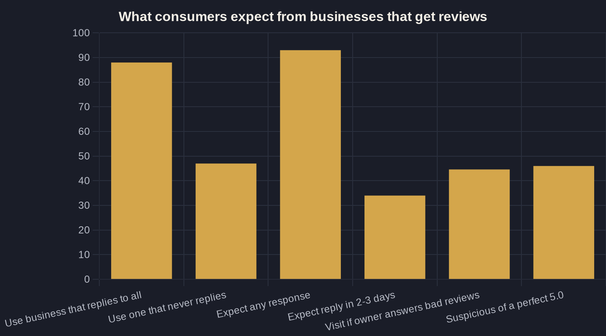

How to Respond to Reviews (Especially the Bad Ones)
A bad review isn't a fire to put out — it's a sales asset most owners waste. Here's the structure for replying that turns skeptics into booked jobs.
Key takeaways
- Responding roughly doubles consideration: 88% will use a business that replies to all its reviews, versus 47% for one that never responds.
- Set a hard rule — a first reply to every negative review within 48 to 72 hours; 53% of customers expect an answer within a week.
- Use the four-part reply: acknowledge by name, own the experience, move it offline, show what changed — and write for the next reader, not the angry one.
- Do not argue, do not paste boilerplate, never offer refunds in public, and never expose private details (a compliance risk in healthcare).
- A few well-handled bad reviews build trust: 46% distrust a perfect 5.0, and replying to reviews has been shown to lift average rating by 0.12 stars.
How to Respond to Negative Reviews Is a Money Decision, Not a PR Chore
Most owners treat a bad review as damage to survive — apologize quietly, hope it scrolls off the page. The data says it is a decision that changes whether the phone rings. In BrightLocal's national survey, 88% of consumers would use a business that replies to all of its reviews, versus just 47% who would consider one that never responds. That gap is your consideration rate cut roughly in half, for the price of typing a reply.
Knowing how to respond to negative reviews is not a public-relations chore; it is part of how local businesses get found and chosen. The same research shows 93% of consumers expect a business to respond to its reviews, and 34% expect that response within two to three days. Silence is not neutral — the market reads it as nobody being home. Your reviews and replies are a ranking-and-conversion layer inside your local SEO system, not a side channel you can ignore.
Think of it the way you think about ad spend. A reply costs two minutes and zero dollars, and it measurably raises the odds that someone reading your profile becomes a booked job. That is a return most marketing tactics cannot touch — which is exactly why it deserves a process instead of a wince.
Respond Fast — the Clock Is Part of the Review
Speed is the variable owners underrate most. 53% of customers expect a response to a negative review within one week, and one in three expect it within three days or less. A reply that lands five weeks later reads as we do not watch this, even when the words are perfect.
Set one simple internal rule: every negative review gets a first reply within 48 to 72 hours, no exceptions. You do not have to resolve the problem that fast — you have to show you saw it and you are on it. Turn on review notifications in your Google Business Profile so a one-star review never sits unseen while prospects keep reading it.
For a busy owner, fast beats perfect. A same-week reply that is plain and human outperforms a flawless paragraph that took a month, because the timestamp is visible to every future reader.
The Four-Part Structure for How to Respond to Negative Reviews
Here is a structure for how to respond to negative reviews that holds up whether the complaint is a wrong charge, a missed appointment, or a genuinely bad day. It keeps you out of an argument the whole internet can read.
- Acknowledge the person by name and thank them. 'Thanks for telling us, Maria' signals a human read it.
- Empathize and own the experience — not necessarily the blame. 'I'm sorry the visit ran long and left you frustrated' validates the feeling without conceding a fact you dispute.
- Move it offline with a real contact. 'I would like to make this right — please call me directly at [number]' pulls the back-and-forth out of public view.
- Show what changed. 'We have adjusted our Friday scheduling so this does not repeat' tells the next reader you act on feedback.
Notice who you are really writing for. The reviewer may never come back — but the next 50 prospects reading that thread are the customers you are actually answering.
What a Strong Reply Looks Like (and the Mistakes That Sink It)
When you are working out how to respond to negative reviews, keep the reply short, specific, and calm. Name the person, own the experience, offer a path off-platform, and stop. The fastest way to turn one bad review into two is to argue the facts, get defensive, or post a wall of text that reads like a legal brief.
Avoid the predictable mistakes. Do not paste identical boilerplate under every review — readers spot it instantly and it reads as a bot. Do not reveal private details to win the dispute; in healthcare that is a compliance violation, not just a bad look. And never offer refunds or freebies in public, which quietly trains people to leave one-star reviews for a discount.
A good reply sounds like the owner talking, not a policy manual. 'You are right that we dropped the ball on the callback — I have fixed how those get routed, and I would like to earn another shot' does more work than three sentences of corporate apology.
| Consumer behavior or expectation | Figure | What it means for your reply |
|---|---|---|
| Would use a business that replies to all reviews | 88% | Responding is the baseline expectation |
| Would use a business that never responds | 47% | Silence roughly halves your consideration |
| Expect a business to respond to its reviews | 93% | Non-response is conspicuous |
| Expect a reply within 2-3 days | 34% | Speed is part of the expectation |
| Expect a negative review answered within a week | 53% | Set an internal reply SLA |
| More likely to visit if owner answers bad reviews | 44.6% | A good reply pulls customers in |

Handling the Unfair or Fake Review
Sometimes the review is simply wrong — a competitor, a mix-up with another business, or a customer you have never served. Reply anyway, because future readers cannot tell who is right by default. Stay factual and unemotional: 'We do not have a record of serving you — could you confirm we are the right company? We would genuinely like to help.' That calm tone tells onlookers you are reasonable.
If it violates platform policy — hate speech, a competitor's name, obvious spam, or no actual experience — flag it for removal through the platform, but do not bank on it disappearing. Most stay up. Your public reply is the asset you control; treat the flag as a long shot and the response as the real move.
Resist the urge to demand the reviewer take it down. Public pressure reads badly and can escalate into a longer, worse thread. The graceful, factual reply is almost always the stronger play.
Why a Few Bad Reviews Actually Help You Win
A spotless five-star profile reads as staged, not flawless. 46% of shoppers — and 53% of Gen Z — are suspicious of a perfect 5.0 average, and two-thirds actively filter to read the one-star reviews first. Those skeptics are not hunting for perfection; they are judging how you handle imperfection.
Responding well does not just protect the rating — it lifts it. In a peer-reviewed study of hotels on TripAdvisor and Expedia, businesses that started replying to reviews went on to receive 12% more reviews and saw their average star rating rise by 0.12 stars. The act of replying changes the math of the entire profile, because it pulls more people into leaving feedback and resolves the unhappy ones in view of everyone else.
Pair good responses with a steady habit of asking happy customers for reviews, and the occasional one-star stops being a threat. It becomes the contrast that makes your four- and five-star reviews believable.
Make Responses a System, Not a Scramble
The owners who win at reputation do not write heroic responses to crises — they run a quiet system. Reviews checked daily, a 48-to-72-hour reply rule, a saved four-part framework, and enough new reviews flowing in that no single bad one defines the average. That system is what lets your profile climb the local map pack and convert the people who find you there.
This is Owner's Math applied to reputation: each reply is nearly free, and the return shows up as more of the people reading your reviews deciding to call. More than that — 44.6% of consumers say they are more likely to visit a local business when the owner responds to negative reviews. If you want to see what your review-response habits are actually worth in booked jobs, that is the kind of number we trace in Owner's Math.
Map your numbers with us on a call, or join the weekly newsletter where we break down the moves owners use to keep their reputation working as a sales channel.
Sources
- BrightLocal — Local Consumer Review Survey 2024 (2024)
- ReviewTrackers — Customer Reviews: Stats That Demonstrate the Impact of Reviews (2022)
- Harvard Business Review — Study: Replying to Customer Reviews Results in Better Ratings (Proserpio & Zervas, Marketing Science) (2018)
- PowerReviews — The Complete Guide to Ratings & Reviews (2023)
Want this run on your numbers?
Book a call and we will run the Owner's Math on your business — clear numbers, a straight plan, no pitch. Or read the free Playbook first.